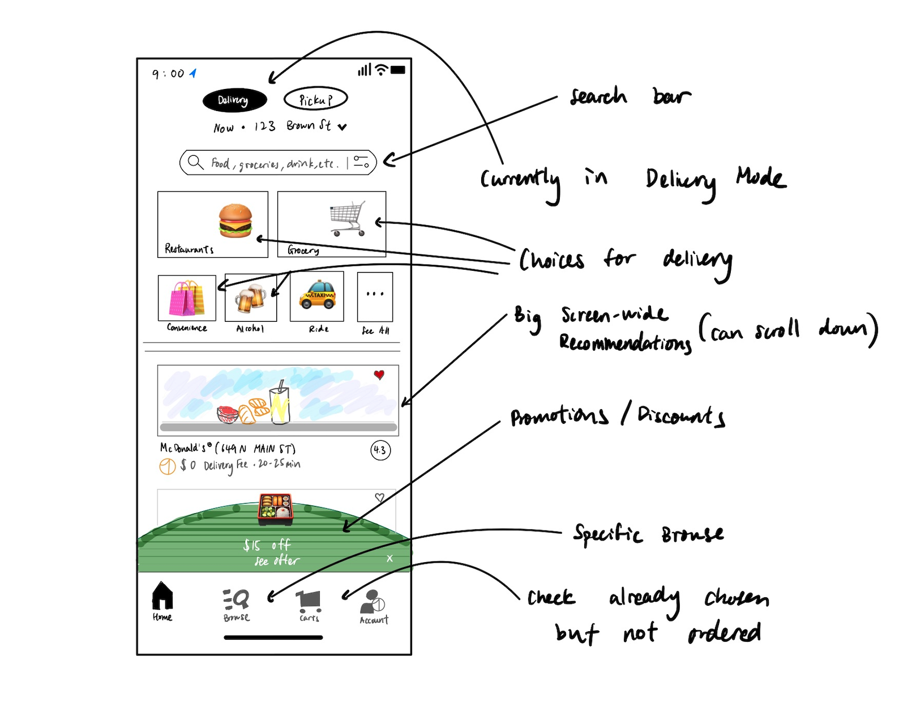
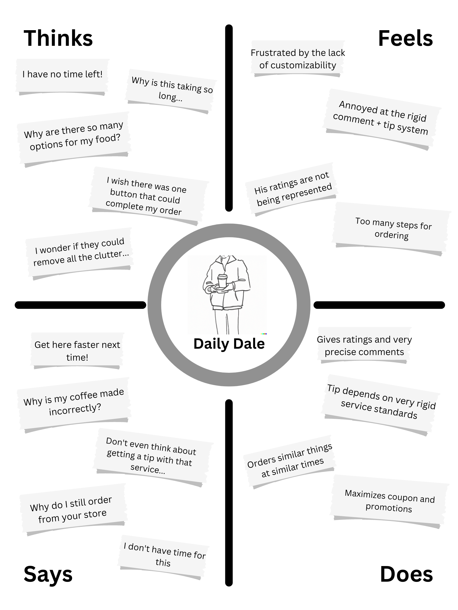
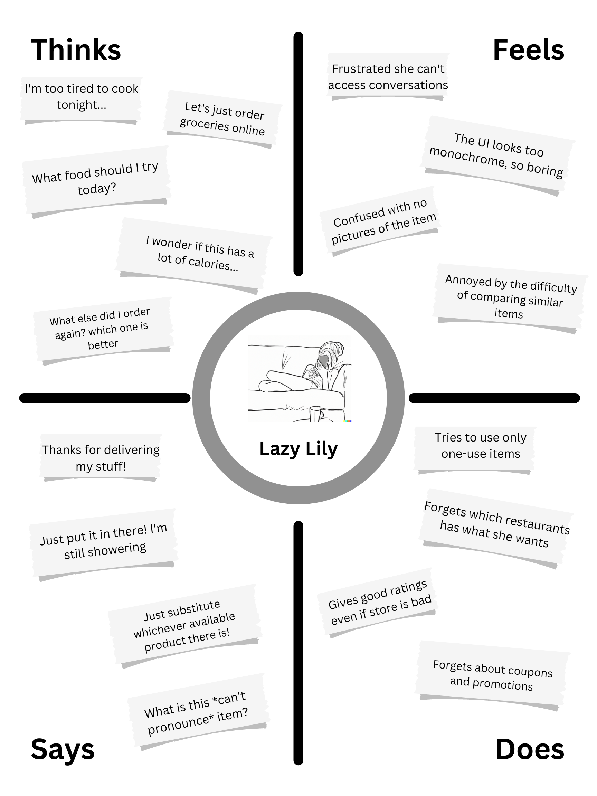

1. What are your expectations for restaurant/cafe options?
2. Has there been any user experiences that stand out as annoying or confusing?
3. What frequency and purpose does delivered foods serve in your life?
4. What is one thing that stands out in this application? (e.g. functionality, design)
5. If you could change one thing about the interface what would it be?

fig. 1 - The interface aims to solve the problem of in-person dining rigidity, allowing for coordination of food delivery, pickup and other services.
| Recording Observations |
⭐Key Observations
Did not use the recommendations scroll down function
Often clicked the promotion before anything else
Hovered over screen to find search options
Confusion between the Grocery and Convenience options
Did not choose the pickup option
Sometimes accidentally clicked the filter button on the search bar
📝Interview Responses Summary
What are your expectations for restaurant/cafe options?
There should be the major brands of fast food chains and local popular stores
They should show stores within a deliverable and acceptable delivery time radius
They should not be more expensive than in store menus (Hidden Fees)
I should be able to quickly find similar types of restaurants in categories
Has there been any user experiences that stand out as annoying or confusing?
I can never find the search bar
The UI has no customizability, I never use any options except for the restaurants and the other buttons take up so much space
I don’t know why clicking into my orders doesn’t let me view images of the food, and the rating system is very broken. I don’t think my comments actually make a difference
Some places you can slide right to exit the tab but some places you can only click the cross button to exit
What frequency and purpose does delivered foods serve in your life? (e.g. daily/source of food, infrequent indulgences, induced by laziness etc.)
I usually order when I'm too lazy to cook, but I’m not really creative about my food choices
It is my fast food grabber, I usually order every week for my daily ‘cheat day’, something like a McDonald’s or Popeyes’
I use it almost everyday to order coffee or other drinks, I don’t really have time to go wait in-person
What is one thing that stands out in this application? (e.g. functionality, design)
The minimalistic design and buttons really make the images of food stand out
All the scroll and buttons are very bouncy and responsive to extra scrolling
The clickable elements are usually very big
If you could change one thing about the interface what would it be?
The use of cartoon-like icons for the choices doesn’t get my appetite up, maybe have that shuffle pictures from my favorite restaurants
Everything is too big, there’s not enough information on my screen and makes it hard to compare different menu items
The black and white design has almost all buttons conform, maybe add themes for it to be more personalized and being able to customize/remove certain elements that I don’t use anyways
| Personas |

Fig. 2 - Daily Dale is a “power user” of food delivery apps who has a very specialized workflow. He’s very time efficient but also adamant about his food and service quality. He orders in basically every meal.

Fig. 3 - Lazy Lily is a person who sometimes orders in when she is too tired to cook or wants to try something new. Her infrequent and unpredictable use of the app make her recommendations unreliable.